All Images
Introduction to microbiome data
Figure 1
Image 1 of 1: ‘Workflow of a microbiome study, from top to bottom. Data generation: study system, sampling, sequencing and raw data. Preprocessing: FASTQ files, read alignment, trimming and filtering, unit clustering, and taxonomy and tree construction. Then five numbered steps: 1. data object (tree, abundance table, taxonomy and sample metadata), 2. data processing (quality control, agglomeration and transformation), 3. statistical analysis (descriptive analysis, alpha diversity, beta diversity and differential analysis), 4. data integration (taxonomic and metabolic profiles combined in a joint analysis) and 5. results (reproducible reporting).’
![Workflow of a microbiome study, from top to bottom. Data generation: study system, sampling, sequencing and raw data. Preprocessing: FASTQ files, read alignment, trimming and filtering, unit clustering, and taxonomy and tree construction. Then five numbered steps: 1. data object (tree, abundance table, taxonomy and sample metadata), 2. data processing (quality control, agglomeration and transformation), 3. statistical analysis (descriptive analysis, alpha diversity, beta diversity and differential analysis), 4. data integration (taxonomic and metabolic profiles combined in a joint analysis) and 5. results (reproducible reporting).](fig/workflow.png)
Figure 2
Image 1 of 1: ‘The same workflow with steps 1 to 3 (data object, data processing and statistical analysis) highlighted as the part covered by this lesson.’
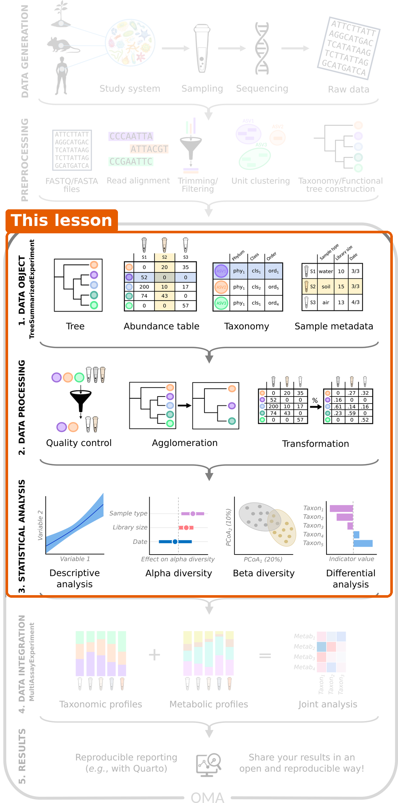
From samples to tables
Figure 1
Image 1 of 1: ‘Microbiome data science workflow with the preprocessing step highlighted: FASTQ files, read alignment, trimming and filtering, unit clustering, and taxonomy and tree construction.’

RStudio project and experimental data
Importing data into TreeSummarizedExperiment
Figure 1
Image 1 of 1: ‘Microbiome data science workflow with the data object step highlighted: the tree, abundance table, taxonomy and sample metadata are combined into one object.’
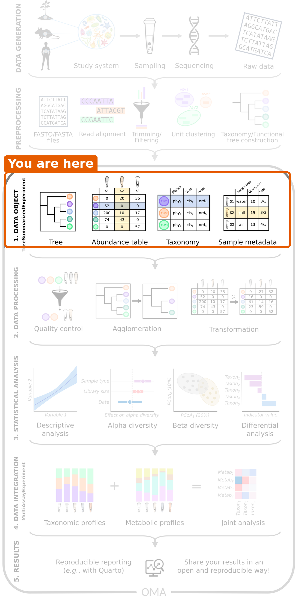
Figure 2
Image 1 of 1: ‘Schematic of a TreeSummarizedExperiment. The assays (abundance tables) are in the middle, with taxa as rows and samples as columns. On the left are the taxonomy tree (rowTree), row links and taxonomy table (rowData). At the top right are the sample metadata (colData), low-dimensional representations (reducedDim), column links and a hierarchy tree for the samples (colTree). Experiment metadata (metadata) is at the bottom right.’

Figure 3
Image 1 of 1: ‘Bar plot of the number of samples by disease: 30 CRC and 30 healthy.’
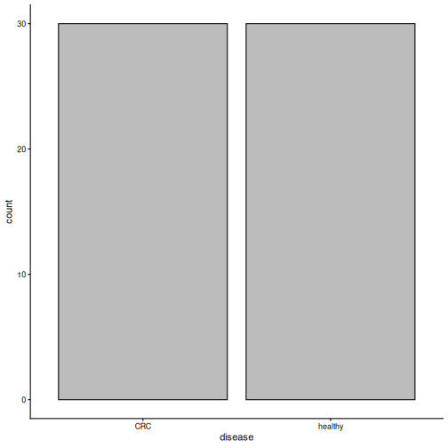
Figure 4
Image 1 of 1: ‘Bar plot of the number of samples by location, coloured by disease. In Bhopal there are 15 CRC and 26 healthy samples; in Kerala there are 15 CRC and 4 healthy samples.’
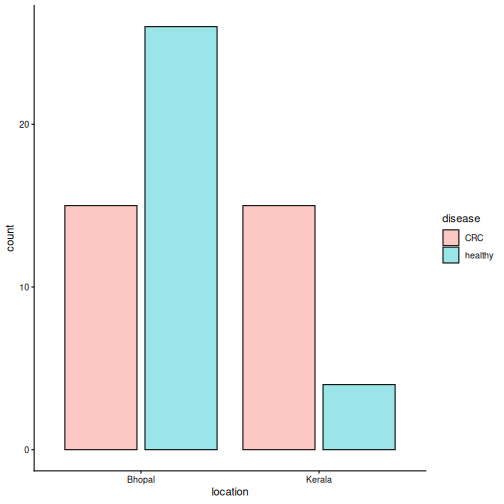
Exploring and preparing microbiome data
Figure 1
Image 1 of 1: ‘Microbiome data science workflow with the data processing step highlighted: quality control, agglomeration and transformation.’

Figure 2
Image 1 of 1: ‘Histogram of library sizes. Most samples have between 3 and 14 million reads; a few have more, and the largest has almost 28 million.’

Figure 3
Image 1 of 1: ‘Stacked bar plot of the relative abundance of phyla in each sample, split into CRC and healthy groups. Bacteroidota (light blue) dominate most samples in both groups, followed by Firmicutes (green).’

Figure 4
Image 1 of 1: ‘Box plot of the relative abundance of Prevotella copri by disease group. In many healthy people it makes up about half of the community; in most CRC patients it is close to zero.’

Figure 5
Image 1 of 1: ‘Histogram of all values in the counts table. Almost all values are zero or close to zero, with a long tail to the right.’

Figure 6
Image 1 of 1: ‘Histogram of all values in the rclr table. The values form a bell-shaped distribution around zero.’

Figure 7
Image 1 of 1: ‘Box plot of library size by disease group. The two groups have similar library sizes.’

Figure 8
Image 1 of 1: ‘Box plots of the relative abundance of the five most abundant families by disease group. Prevotellaceae are much higher in healthy people, and Bacteroidaceae and Enterobacteriaceae are higher in CRC.’

Alpha diversity
Figure 1
Image 1 of 1: ‘Microbiome data science workflow with alpha diversity highlighted in the statistical analysis step.’
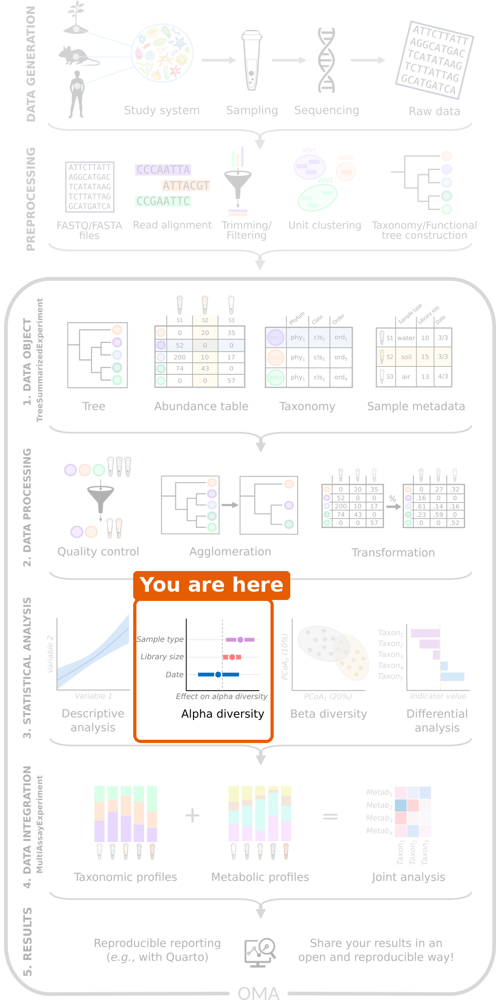
Figure 2
Image 1 of 1: ‘Two gardens drawn as squares with 100 flowers each, one coloured point per flower. Garden A has ten colours, each used for ten flowers, mixed evenly. Garden B has the same ten colours, but 91 flowers share one colour and each of the other nine colours appears only once.’
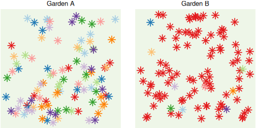
Figure 3
Image 1 of 1: ‘Box plot of Shannon diversity by disease group. CRC samples have higher Shannon diversity than healthy samples.’
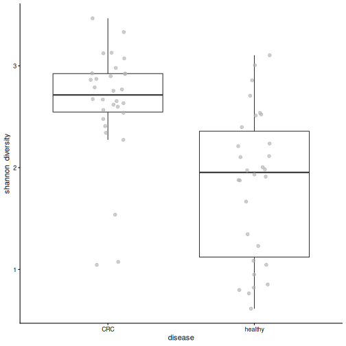
Figure 4
Image 1 of 1: ‘Box plot of observed richness by disease group. CRC samples have more species than healthy samples.’
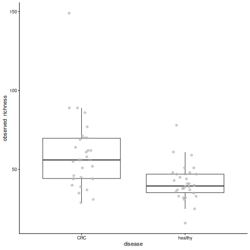
Figure 5
Image 1 of 1: ‘Box plot of Pielou's evenness by disease group. Healthy samples are less even than CRC samples.’
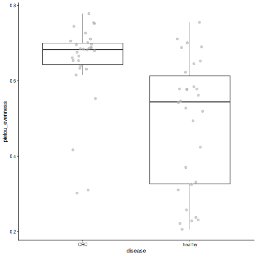
Figure 6
Image 1 of 1: ‘Box plot of Faith's phylogenetic diversity by disease group. CRC samples have higher values.’
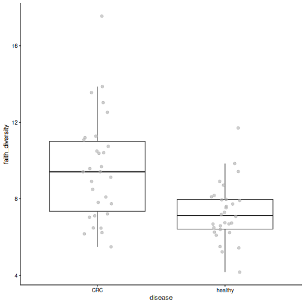
Figure 7
Image 1 of 1: ‘Box plot of Shannon diversity by gender. The two groups are similar.’
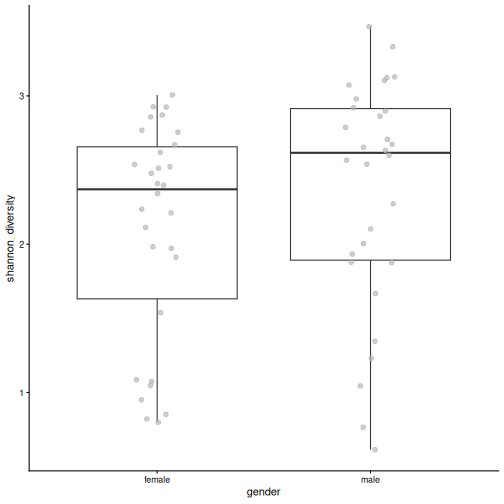
Figure 8
Image 1 of 1: ‘Box plot of age by disease group. CRC patients are clearly older than healthy people.’
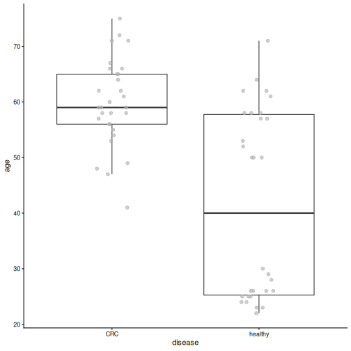
Figure 9
Image 1 of 1: ‘Box plots of Shannon diversity by age group, coloured by disease. There are no CRC patients under 40. In the two older age groups, CRC samples have higher diversity than healthy samples.’
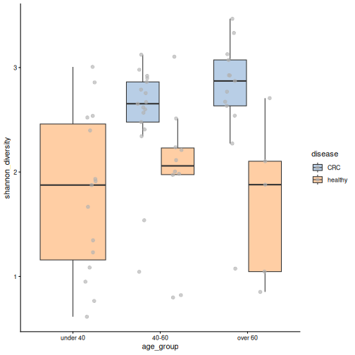
Beta diversity
Figure 1
Image 1 of 1: ‘Microbiome data science workflow with beta diversity highlighted in the statistical analysis step.’
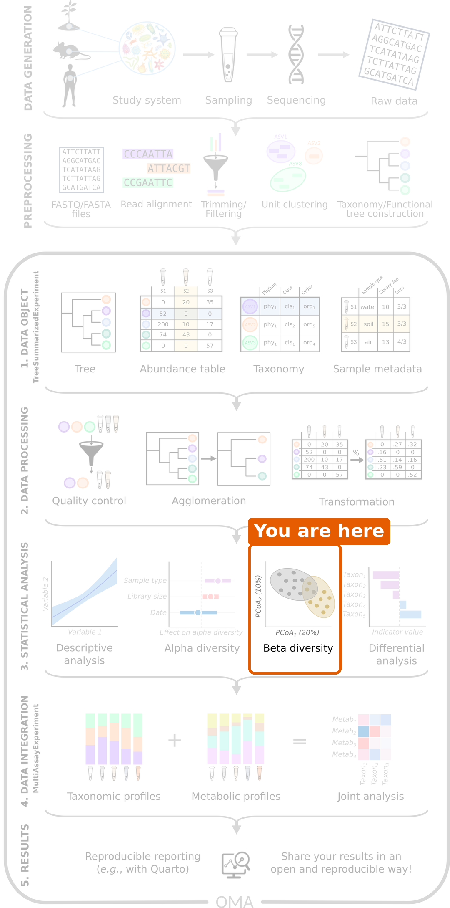
Figure 2
Image 1 of 1: ‘PCoA plot based on Bray-Curtis dissimilarity, coloured by disease. Healthy samples are mostly on the right side of the first axis and CRC samples mostly on the left, with some overlap.’
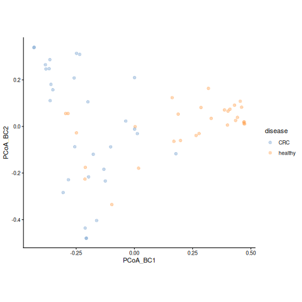
Figure 3
Image 1 of 1: ‘PCoA plot coloured by the relative abundance of Prevotella copri. Samples on the right side of the first axis have a high abundance of Prevotella copri.’
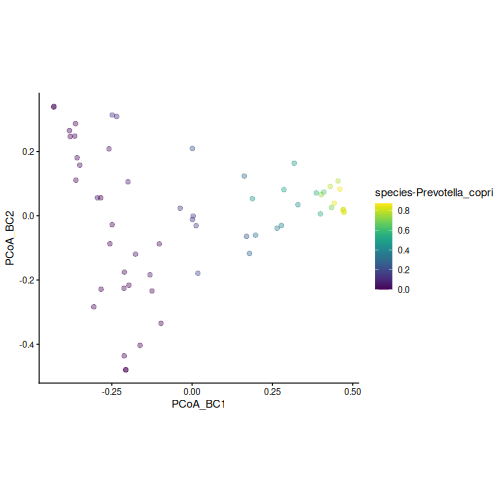
Figure 4
Image 1 of 1: ‘PCA plot of rclr values, coloured by disease. Healthy samples are mostly in the upper left; CRC samples are spread over the right side and the bottom of the plot.’
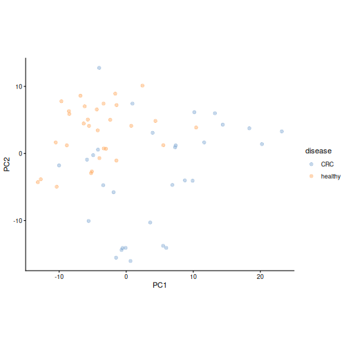
Figure 5
Image 1 of 1: ‘Bar plots of the loadings of the ten most important taxa on the first two principal components.’
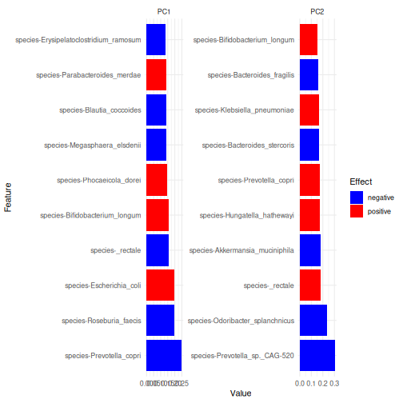
Figure 6
Image 1 of 1: ‘PCoA plot based on unweighted UniFrac distance, coloured by disease. Healthy samples are mostly in the upper left; CRC samples are mostly on the right and at the bottom.’
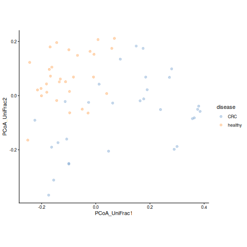
Figure 7
Image 1 of 1: ‘PCoA plot based on weighted UniFrac distance, coloured by disease. The groups overlap more than with unweighted UniFrac; many healthy samples form a tight group on the right.’
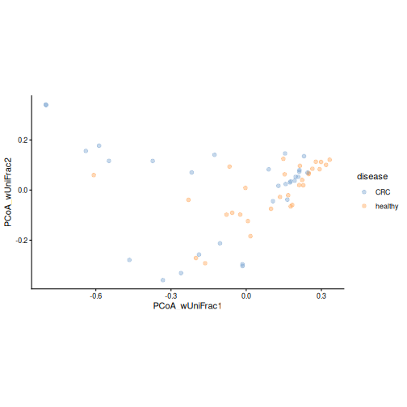
Figure 8
Image 1 of 1: ‘PCoA plot based on weighted UniFrac distance, coloured by the relative abundance of Prevotella copri. Samples with a high abundance form a tight group on the right.’
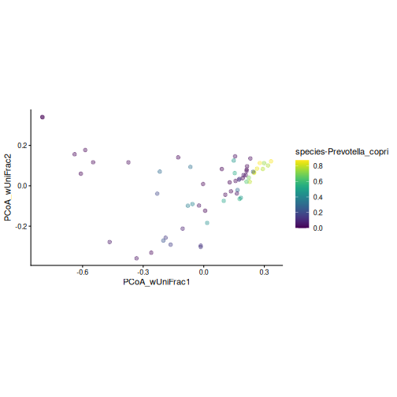
Figure 9
Image 1 of 1: ‘Bray-Curtis PCoA plot coloured by disease, with an ellipse around each group. The centres of the two ellipses lie on opposite sides of the first axis, and the ellipse of the CRC group is larger than that of the healthy group.’
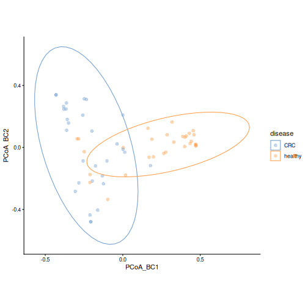
Figure 10
Image 1 of 1: ‘PCoA plot based on Bray-Curtis dissimilarity, coloured by location. Samples from Kerala are mostly on the left side of the first axis and in the lower part of the plot.’
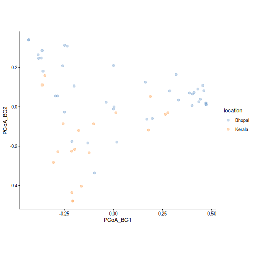
Figure 11
Image 1 of 1: ‘dbRDA plot coloured by disease, with one arrow for disease and one for location. The labels show the share of differences each variable explains and its p-value.’
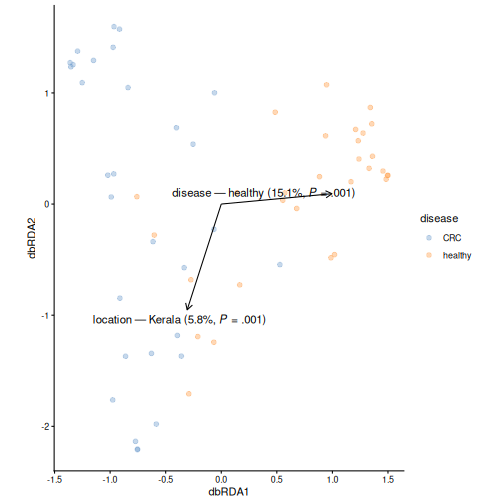
Figure 12
Image 1 of 1: ‘dbRDA plot coloured by disease, with arrows for disease, location and age. The labels show the share of differences each variable explains and its p-value.’
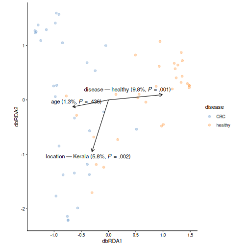
Figure 13
Image 1 of 1: ‘PCoA plot of genus-level Bray-Curtis dissimilarities, coloured by disease. CRC and healthy samples tend to separate, similar to the species-level plot.’
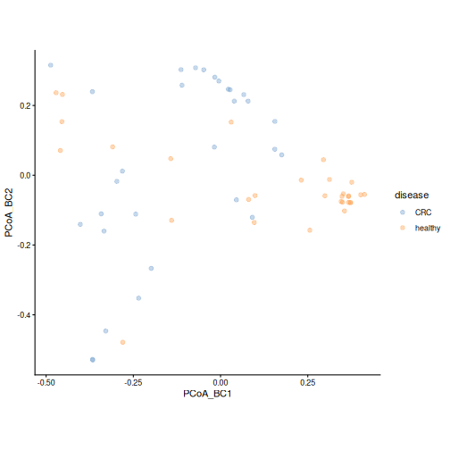
Figure 14
Image 1 of 1: ‘PCA plot of rclr values, coloured by cluster and with point shapes by disease. The two clusters occupy different parts of the plot, and most healthy samples fall in one cluster.’
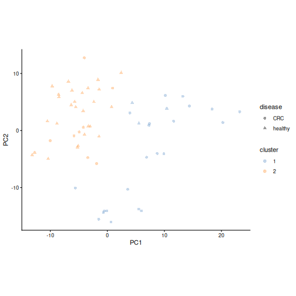
Figure 15
Image 1 of 1: ‘Box plot of the relative abundance of Prevotella copri by cluster. In one cluster it makes up a large part of the community; in the other it is close to zero.’
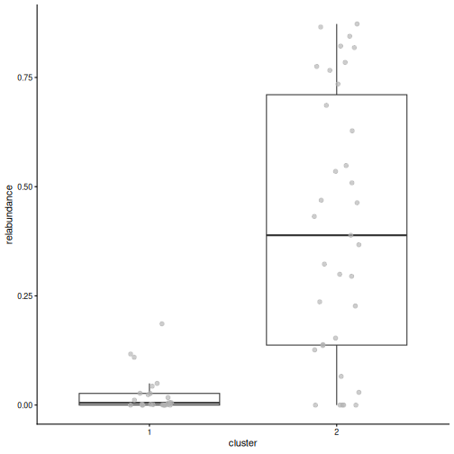
Differential abundance and prevalence analysis
Figure 1
Image 1 of 1: ‘Microbiome data science workflow with differential abundance highlighted in the statistical analysis step.’
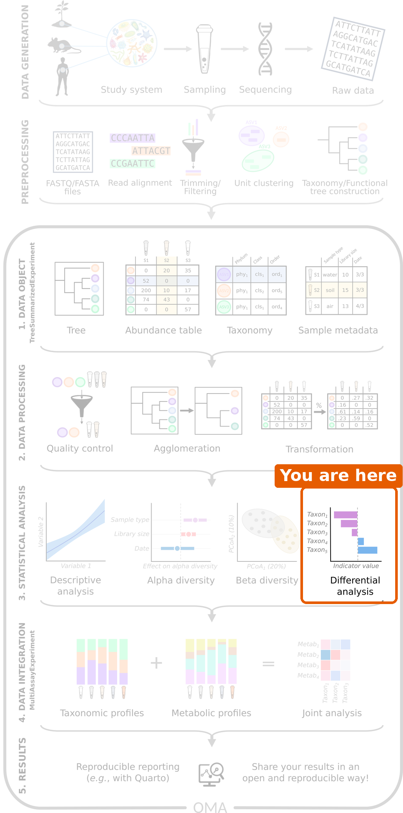
Figure 2
Image 1 of 1: ‘Box plots of the log10 relative abundance of Prevotella copri and Faecalibacterium prausnitzii by disease group. Both tend to be higher in healthy people, but the groups overlap.’
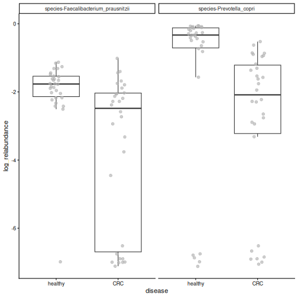
Figure 3
Image 1 of 1: ‘Forest plot of the species that differ in abundance. Species with negative coefficients, such as Prevotella copri, Faecalibacterium prausnitzii and Eubacterium rectale, are less abundant in CRC; species with positive coefficients, such as Odoribacter splanchnicus, are more abundant in CRC.’
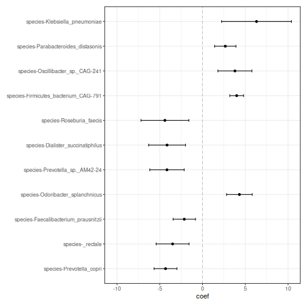
Figure 4
Image 1 of 1: ‘Box plots of relative abundance by disease group for four of the significant species. Prevotella copri, Eubacterium rectale and Faecalibacterium prausnitzii are higher in healthy people; Odoribacter splanchnicus is higher in CRC.’
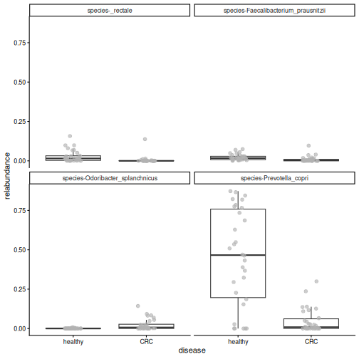
Figure 5
Image 1 of 1: ‘Box plot of the relative abundance of Flavonifractor plautii by disease group. Most healthy people have zero abundance, while most CRC patients have a small, non-zero abundance.’
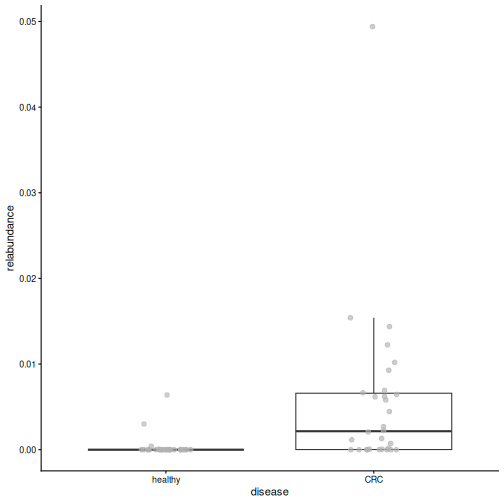
Figure 6
Image 1 of 1: ‘Box plot of age by disease group. CRC patients are older; no CRC patient is under 40.’
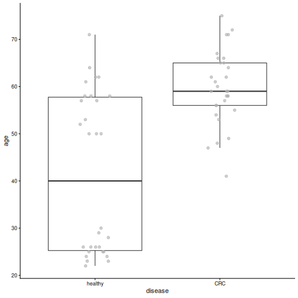
Machine learning: predicting an outcome
Figure 1
Image 1 of 1: ‘Microbiome data science workflow with the statistical analysis step highlighted.’
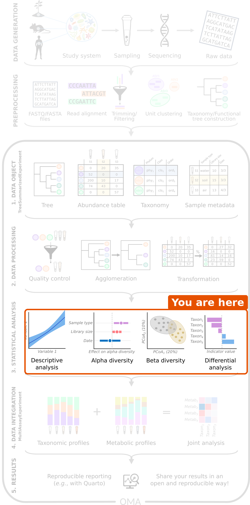
Figure 2
Image 1 of 1: ‘Line plot of the cross-validation AUC of the random forest for three values of mtry. All values give an AUC around 0.9; the smallest mtry gives the highest AUC.’
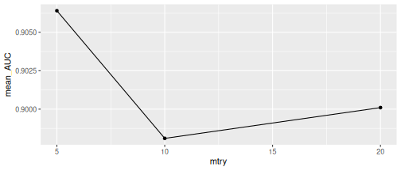
Figure 3
Image 1 of 1: ‘ROC curve of the random forest on the test data. The curve goes straight up the left edge to a sensitivity of 1 and then runs along the top, which corresponds to an AUC of 1. A dashed diagonal line shows a random model.’
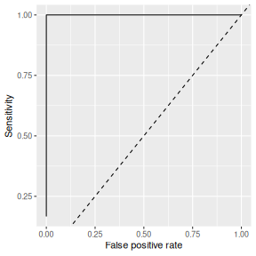
Figure 4
Image 1 of 1: ‘Box plots of the cross-validation AUC and the test AUC of four random forest models trained with different random splits. The cross-validation AUCs lie close together above 0.9, while the test AUCs spread from about 0.7 to 1. A dashed line marks an AUC of 0.5.’
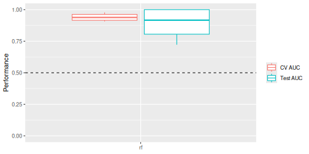
Figure 5
Image 1 of 1: ‘Bar plot of the importance of the ten most important species in the random forest model. Roseburia faecis is the most important, followed by Prevotella copri and Odoribacter splanchnicus.’
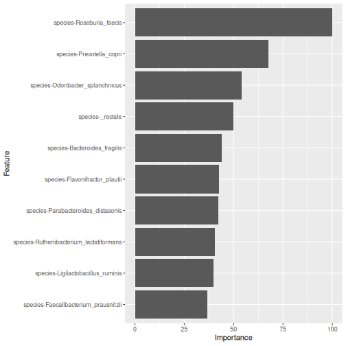
Capstone: analyse a new dataset
Figure 1
Image 1 of 1: ‘Microbiome data science workflow with the data object, data processing and statistical analysis steps highlighted.’
Figure 2
Image 1 of 1: ‘Bar plot of the number of samples in each cohort, coloured by patient status. Each cohort has both ADHD and control samples.’
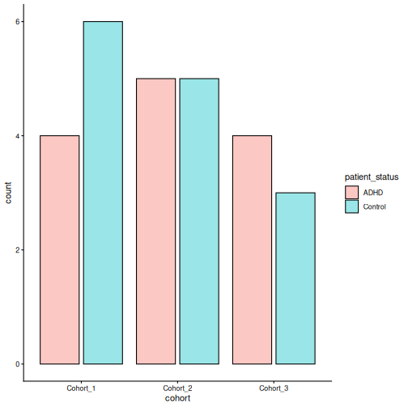
Figure 3
Image 1 of 1: ‘Histogram of library sizes, from under 2,000 to about 40,000 reads per sample.’
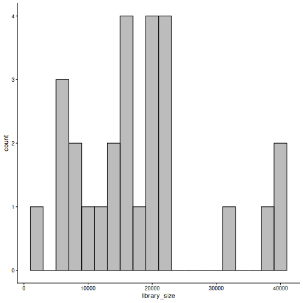
Figure 4
Image 1 of 1: ‘Stacked bar plot of phylum relative abundances in each sample, split by ADHD and control. Bacteroidetes dominate most samples, followed by Firmicutes and Verrucomicrobia.’
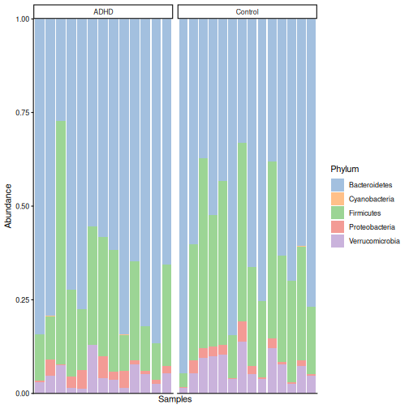
Figure 5
Image 1 of 1: ‘Box plot of Shannon diversity by patient status. The ADHD and control groups overlap almost completely.’
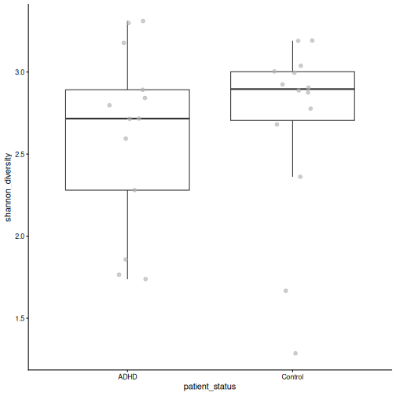
Figure 6
Image 1 of 1: ‘PCoA plot based on Bray-Curtis dissimilarity, coloured by patient status. ADHD and control samples are found on both sides of the first axis; a tight group of ADHD samples lies at the bottom of the plot.’
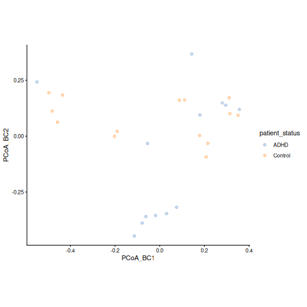
Figure 7
Image 1 of 1: ‘PCoA plot based on Bray-Curtis dissimilarity, coloured by cohort. The cohorts are spread over the whole plot.’
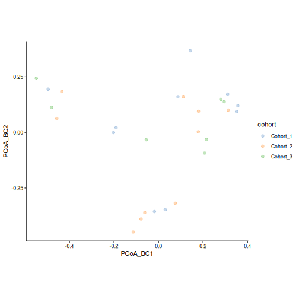
Figure 8
Image 1 of 1: ‘Box plots of the relative abundance of the significant taxa by patient status. The groups overlap a lot, and many samples have zero abundance.’
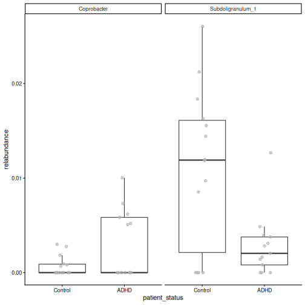
Next steps
Figure 1
Image 1 of 1: ‘Microbiome data science workflow with the data object, data processing and statistical analysis steps highlighted. This lesson covered these steps.’